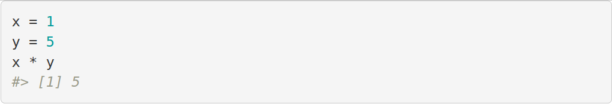
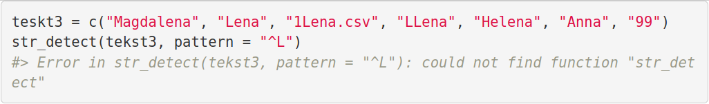
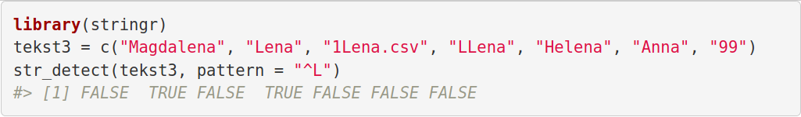
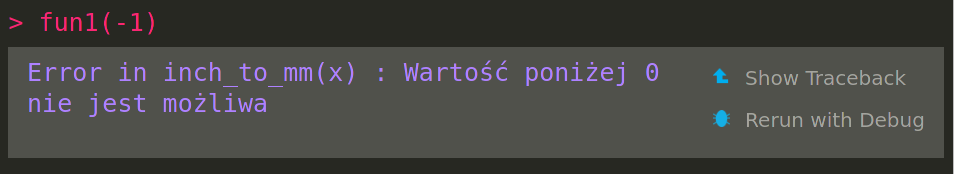
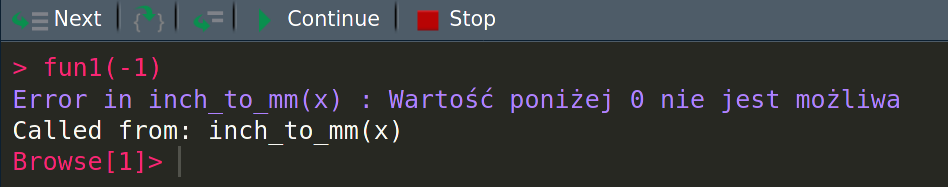

12 Debugowanie
Używając pakietów i funkcji stworzonych przez inne osoby możemy czasem znaleźć się w sytuacji, gdy zamiast wyniku otrzymujemy komunikat błędu. Warto wówczas upewnić się czy nie napisaliśmy żadnej literówki i podaliśmy odpowiednie argumenty funkcji. Konieczne kolejne kroki mogą obejmować sprawdzenie pliku pomocy danej funkcji, czy też skopiowanie najważniejszego fragmentu błędu i wklejenie go do wyszukiwarki internetowej. Istnieje szansa, że ktoś już wcześniej napotkał ten problem, zadał pytanie i otrzymał na nie odpowiedź w internecie (np, na https://stackoverflow.com/).
Czasem się może jednak okazać, że odkryliśmy nowy problem - warto go wtedy zgłosić do twórców pakietu. Wiele pakietów na platformie CRAN zawiera sekcję BugReports, gdzie można znaleźć link do zgłaszania błędów. Przykładowo, pakiet stringr jest opisany pod adresem https://cran.r-project.org/package=stringr i w jego sekcji BugReports znajduje się odnośnik do https://github.com/tidyverse/stringr/issues. W przypadku zgłaszania błędów zazwyczaj nie należy pisać bardzo długich opisów czy wklejać cały kod, który został napisany. Konieczne jest natomiast przygotowanie powtarzalnego przykładu (ang. reproducible example), czyli minimalnego kodu możliwego do odtworzenia problemu na innym komputerze (sekcja 12.1). Warto jednak pamiętać, że sekcja Issue na platformie Github służy głównie do zgłaszania problemów, a nie do zadawania pytań. W przypadku potrzeby zadania pytania, lepszym pomysłem jest opublikowanie go na https://stackoverflow.com/,
Tworzenie kodu możliwego do odtworzenia problemu (powtarzalnych przykładów) jest też pomocne w przypadku, gdy my piszemy nowe skrypty i funkcje i napotkamy na błędy.
Jest to często część debugowania (ang. debugging) - procesu rozwiązywania problemów i błędów w oprogramowaniu.
Istnieje wiele potencjalnych taktyk debugowania kodu, w tym debugowanie używając funkcji takich jak print() (sekcja 12.3), czy też debuggera (sekcja 12.4).
Więcej na temat debugowania kodu w R można dowiedzieć się więcej z prezentacji Jenny Bryan pt. Object of type ‘closure’ is not subsettable, rozdziału Debugging R code książki Jennifer Bryan and Hester (2019), oraz rozdziału Debugging książki Wickham and Grolemund (2016). Dodatkowo, na stronach Debugging an R Package with C++, Debugging C/C++ code that interfaces with R, oraz Debugging with LLDB można przeczytać na temat debugowania kodu C++ łączącego się z R.
12.1 Powtarzalne przykłady
Powtarzalny przykład oznacza fragment kodu, który może być odtworzony przez inną osobę na innym komputerze lub przez siebie samego w przyszłości. Może on służyć pokazaniu poprawnego rozwiązania, wskazaniu na błędy w funkcjach, lub też jako załącznik do prośby o pomoc z kodem. Powtarzalny przykład powinien składać się przynajmniej z:
- Z małego zbioru danych lub obiektu zawierającego dane wystarczającego do odtworzenia obliczeń
- Krótkiego kodu, który może być uruchomiony na powyższym zbiorze danych
Czasem ważne są też dodatkowe informacje o używanej wersji R, posiadanym systemie operacyjnym, wersjach używanych pakietów, etc.
Można do tego użyć funkcji sessionInfo().
12.1.1 Pakiet reprex
Stworzenie powtarzalnego przykładu w R może zostać ułatwione używając pakietu reprex (Jennifer Bryan et al. 2019). Ten pakiet uruchamia wybraną część kodu w nowej sesji R uruchomionej w tle, wykonuje kolejne operacje, a następnie zapisuje uzyskany wynik do schowka.
Główną funkcją w tym pakiecie jest reprex().
Funkcję reprex() można użyć poprzez wpisanie kodu wewnątrz tej funkcji lub też poprzez wybranie opcji Reprex selection z menu Addins w RStudio.
Możliwe jest również stworzenie powtarzalnego przykładu na podstawie skryptu R:
Więcej informacji na temat powtarzalnych przykładów oraz pakietu reprex można znaleźć na oficjalnej stronie pakietu reprex, oraz stronach So you’ve been asked to make a reprex, How to make a great R reproducible example, Magic reprex, reprex: help me help you!, oraz Get help!.
12.1.2 Tworzenie powtarzalnego przykładu
Działanie pakietu reprex można zobaczyć poniżej.
Tworzymy dwa obiekty x i y, przypisujemy im wartości, a następnie je mnożymy przez siebie.
Ten sam kod umieszczony w funkcji reprex() wygląda w ten sposób:
Wynik działania powyższego kodu zapisywany jest w schowku jako Markdown oraz w postaci wyświetlonego pliku HTML:

Kolejny powtarzalny przykład pochodzi z rozdziału 6, gdzie naszym celem było określenie które elementy wektora tekst3 rozpoczynają się od dużej litery L.
reprex({
teskt3 = c("Magdalena", "Lena", "1Lena.csv", "LLena", "Helena", "Anna", "99")
str_detect(tekst3, pattern = "^L")
})Niestety zwraca on błąd. Powyższy kod ma dwa problemy - czy jesteś w stanie je wskazać?

Odpowiedź - ten kod nie jest w pełni samowystarczalny - brakuje tam dołączenia pakietu stringr, który zawiera funkcję str_detect().
Drugi problem to literówka w obiekcie teskt3.
Naprawiona wersja tego kodu znajduje się poniżej:
reprex({
library(stringr)
tekst3 = c("Magdalena", "Lena", "1Lena.csv", "LLena", "Helena", "Anna", "99")
str_detect(tekst3, pattern = "^L")
})
12.2 Proces debugowania
Nie ma uniwersalnego procesu debugowania, który działa dla każdego napotkanego problemu programistycznego. Można jednak określić kilka kroków, które mogą znacząco ułatwić debugowanie:
- Powtarzalność błędu
- Identyfikacja przyczyny błędu
- Usunięcie błędu
- Weryfikacja naprawy błędu i jej konsekwencji
W pierwszym kroku warto się upewnić, że napotkany błąd nie jest spowodowany przez inne obiekty w środowisku R.
Należy wyczyścić środowisko R używając rm(list = ls()) a następnie zresetować sesję R (skrót CTRL+SHIFT+F10 w RStudio).
Warto też wydzielić z kodu najmniejszy fragment, który pozwala na odtworzenie błędu (powtarzalny przykład).
Teraz należy jeszcze raz spróbować użyć kodu zwracającego błąd, aby się upewnić, że dalej istnieje.
Drugi krok obejmuje zlokalizowanie dokładnego miejsca w którym błąd powstaje.
Może to być konkretna linia kodu, miejsce w pętli, a czasem nawet wywołanie innej zewnętrznej funkcji.
Ten krok można wykonać na wiele sposobów.
Dwa z nich, debugowanie używając funkcji takich jak print (sekcja 12.3) i debugowanie interaktywne (sekcja 12.4), są opisane w tym rozdziale.
W trzecim kroku należy usunąć wcześniej zlokalizowany błąd.
Nie powinien to być jednak ostatni krok.
Należy jeszcze upewnić się, że nowa wersja kodu nie tylko przestaje zwracać błędy, ale też daje poprawne wyniki.
Często odbywa się to poprzez wykonanie wcześniej stworzony testów jednostkowych (sekcja 11.1).
12.3 Podstawowe podejście do debugowania
Klasycznym podejściem do debugowania jest dodanie funkcji print() pokazującej wartości obiektów w okolicy linii kodu, którą uznajemy za potencjalne źródło błędu.
Dalej warto zaplanować jakie testy kodu wykonać, aby wyłapać dokładne miejsce wystąpnienia błędu.
Trzeba też zapisywać potencjalne wyniki.
Takie systematyczne podejście może zaoszczędzić dużo czasu w porównaniu do losowego testowania różnych wartości w kodzie.
Oprócz funkcji print() można też wykorzystać funkcję cat() w przypadku małych obiektów lub funkcję str() w przypadku większych obiektów.
12.4 Debugger
R posiada także wbudowany debugger - program analizujący kod w celu odnalezienia zawartych w nim błędów. Pozwala on na wejście do środka wykonywanych funkcji, śledzenie i edycję wartości poszczególnych obiektów oraz wykonywanie kodu linia po linii.
Dla przykładu stwórzmy nową funkcję f_to_c(), która zamienia wartości ze stopni Fahrenheita na stopnie Celsjusza.
Dodatkowo sprawdza ona czy podana wartość (argument x) nie jest numeryczna oraz czy jest mniejsza niż zero i w takich wypadkach wywołuje ona błąd.
f_to_c = function(x) {
if (!is.numeric(x)){
stop("Podana wartość nie jest numeryczna")
}
if (x < 0){
stop("Wartość poniżej 0 nie jest możliwa")
}
y = x - 32
y = y / 1.8
y
}Dodatkowo, wyobraźmy sobie, że funkcja f_to_c() jest używana w obliczeniach jakiejś kolejnej funkcji fun1(), która jest używana w obliczeniach funkcji fun2(), a ta w funkcji fun3().
Powyższe funkcje jedynie wywołują siebie nawzajem, ale w typowej sytuacji składałyby się one z wielu linii kodu i wykonywałby szereg operacji.
Załóżmy teraz, że chcemy wykonać i otrzymać wynik działania fun3() dla podanego argumentu 1.
W tym przypadku po chwili otrzymujemy poprawny wynik -17.2.
Możliwa jest jednak sytuacja, gdy my, nasi użytkownicy, albo inny program poda na wejściu wartość, która kończy się błędem, np. -1.
Otrzymujemy komunikat błędu, ale nie wiemy wynikiem działania jakiej funkcji jest ten błąd.
Przykładowo, chcemy zezwolić naszym użytkownikom na podawanie wartości ujemnych - musimy poprawić jakieś miejsce w kodzie, ale nie wiemy gdzie.
Z pomocą tutaj może przyjść funkcja traceback().
traceback()
#> 3: stop("Wartość poniżej 0 nie jest możliwa") at #3
#> 2: inch_to_mm(x) at #2
#> 1: fun3(-1)Czytamy jej wynik od dołu do góry, dowiadując się, że wywołanie funkcji fun3(-1) skończyło się błędem wewnątrz funkcji f_to_c(x), a dokładnie w linii stop("Wartość poniżej 0 nie jest możliwa").
Posiadając tę wiedzę możemy przejść do funkcji f_to_c() i zmienić ją zgodnie z naszymi potrzebami.
Alternatywną możliwością do funkcji traceback() jest włączenie opcji interaktywnego debuggera w RStudio.
Pierwszym krokiem jest włączenie tzw. Error Inspectora, co można zrobić w menu RStudio Debug -> On Error -> Error Inspector.
Teraz po wykonaniu kodu fun3(-1) otrzymamy nie tylko komunikat błędu, ale także dwie nowe ikony Show Traceback i Rerun with Debug.

Pierwsza z nich wywołuje działanie wcześniej opisanej funkcji traceback().
Druga, Rerun with Debug, uruchamia interaktywny debugger.
W tym momencie cały kod jest ponownie wykonywany i zatrzymywany w miejscu gdzie błąd powstał.
Teraz w oknie Environment można znaleźć dwie grupy informacji: istniejące obiekty oraz Traceback pokazujący w którym kroku obliczeń jesteśmy.
Dodatkowo konsola R wygląda inaczej niż zwykle.
Pod informacją o błędzie wyświetlił się tekst Browse[1]>, a nad oknem konsoli pojawił się szereg ikon:

- Pierwsza ikona
Next, skrót klawiaturowyn, wykonuje kolejny krok obliczeń - Druga ikona,
s, działa podobnie doNext, z tym wyjątkiem, że gdy kolejny krok obliczeń jest funkcją to wtedy pozwala ona na wejście do tej funkcji i sprawdzenie jej interaktywnie - Trzecia ikona,
f, kończy działanie obecnej funkcji lub pętli - Czwarta ikona,
c, wyłącza interaktywny debugger ale pozwala na dalsze wykonywanie działań wewnątrz funkcji - Ostatnia ikona,
Q, kończy działanie debuggera
Uzyskane informacje z debuggera pozwalają nie tylko na zrozumienie, gdzie jest miejsce w którym błąd się pojawia, ale także jakie są wtedy wartości naszych obiektów.
Teraz w konsoli możemy wpisać ls.str() co pozwala sprawdzić jakie obiekty znajdują się w pamięci komputera w tej sesji R.
Możemy się o tym też dowiedzieć w oknie Environment.
Domyślnie interaktywny debugger aktywowany jest w przypadku wywołania błędu.
Możemy go jednak zastosować, gdy chcemy się dowiedzieć jakie obiekty i ich wartości znajdują się w konkretnym miejscu działania naszej funkcji.
Wtedy konieczne jest zasygnalizowanie, gdzie chcemy aby debugger został aktywowany, co możemy zrobić na dwa podstawowe sposoby.
Pierwszy z nich polega na dodaniu przed interesującym nas miejscem linii kodu z funkcją browser(), druga natomiast polega na kliknięciu w RStudio na lewo od numeru interesującej nas linii kodu.
Wówczas pojawi się czerwona kropka, tzw. “breakpoint”, sygnalizująca, że w tym miejscu zostanie uruchomiony debugger i będziemy mogli sprawdzić stan działania programu.
Inne możliwości wywołania interaktywnego debuggera dają takie funkcje jak debug(), trace() i recover().46
12.5 Zadania
- Stwórz powtarzalny przykład pokazujący działanie funkcji
f_to_c()na wartościach wejściowych10oraz"ciepło". - Włącz Error Inspectora w RStudio na stałe (
Debug -> On Error -> Error Inspector). Kolejny raz gdy pojawi się błąd w Twoim kodzie, użyj opcjiShow TracebackiRerun with Debug. Czy pomogło to w rozwiązaniu problemu? - Zapisz funkcję
f_to_c()stworzoną w tym rozdziale do plikuf_to_c.R. Otwórz ten skrypt i ustaw “breakpoint” w liniiy = x - 32. Uruchom tę funkcję i sprawdź co będzie tego efektem.
Bibliografia
Bryan, Jennifer, and Jim Hester. 2019. What They Forgot to Teach You About R.
Bryan, Jennifer, Jim Hester, David Robinson, and Hadley Wickham. 2019. Reprex: Prepare Reproducible Example Code via the Clipboard. https://CRAN.R-project.org/package=reprex.
Wickham, Hadley, and Garrett Grolemund. 2016. R for Data Science: Import, Tidy, Transform, Visualize, and Model Data. " O’Reilly Media, Inc.".
Wyjaśnienie działania tych funkcji można znaleźć w prezentacji Jima Hestera Introduction to debugging in R and RStudio, której nagranie jest pod adresem https://www.youtube.com/watch?v=r7oBeEyN2jQ↩